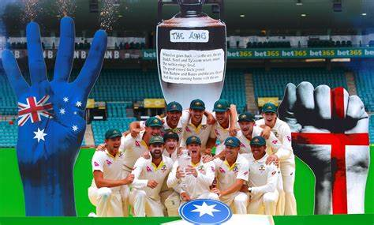
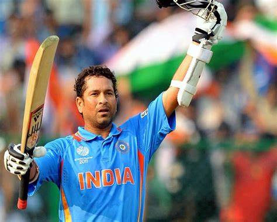
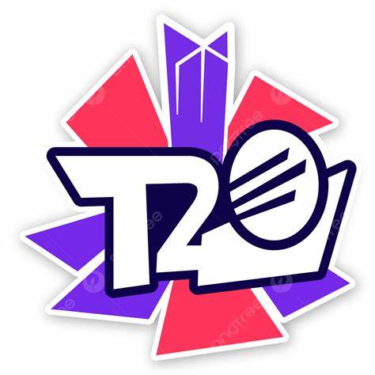

Cricket has a rich history filled with memorable moments, legendary players, and significant tournaments.
Memorable Moments
The Ashes: The historic Test series between England and Australia, known for its intense competition and iconic moments.
1983 World Cup: India's unexpected victory, led by Kapil Dev, which inspired a cricketing revolution in the country.


Key Players
Sir Don Bradman: Widely regarded as the greatest batsman of all time.
Sachin Tendulkar: The "Little Master," known for his numerous records and long career.


Important Tournaments
ICC Cricket World Cup: The premier international championship of One Day International (ODI) cricket.
T20 World Cup: The global championship for the Twenty20 format.
Indian Premier League (IPL): A major T20 league featuring international and domestic players.
